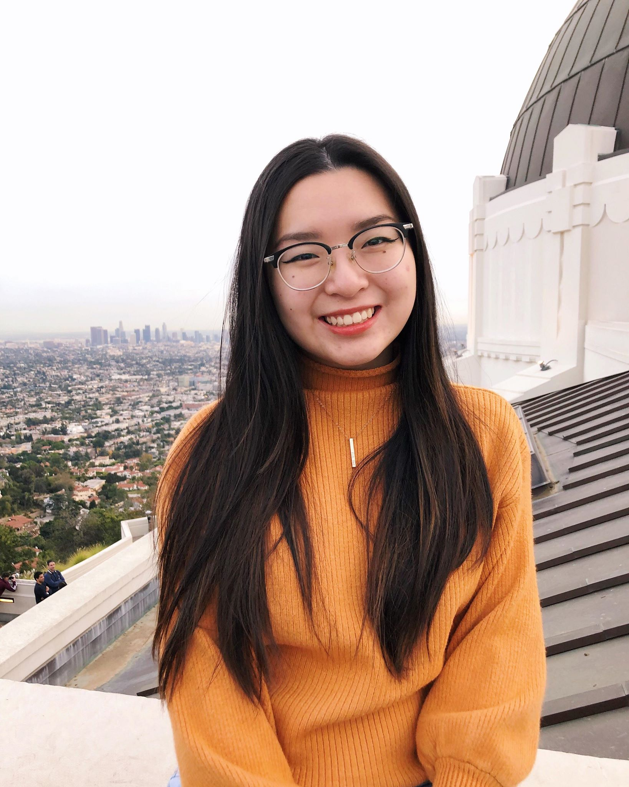

About Me

Hi! My name is Poh Yee Tan and I coded this entire website!
The first web development coding workshop I attended during my junior year of college changed my life. When I wrote my first
line of code I got chills throughout my body (literally). I knew right then and there that this was my calling. Ever since then
I have continuously been working on various projects to improve on my web development skills such as
HTML, CSS and JavaScript and I am also learning other coding languages such as Java. I'm excited to keep learning more!
As a student, I was still interested in how technology could be used in business to help people and that’s when I made the decision to change my major
to Information Technology and Systems as I realize this would be a better fit for me to grow and learn more about how I could
optimize technology through business practices to help people.
Besides my studies, I am also focused on supporting and leading various organizations a part of my university and community.
I believe that being a part of a supportive community not only benefit others but be beneficial to your own personal growth as well.
As the Student Orgnization Center Representative officer for Women in Technology and Business organization, Risk Management Officer of the Healthcare Management Association
and to being a second year Mentor for the Freshman Mentor Program these roles have taught me how to be a good communicator, a team player and a leader.
In my free time I like to develop my coding skills by working on side projects I find interesting! I also love to travel, cook, journal, and find
beautiful places to watch sunsets.